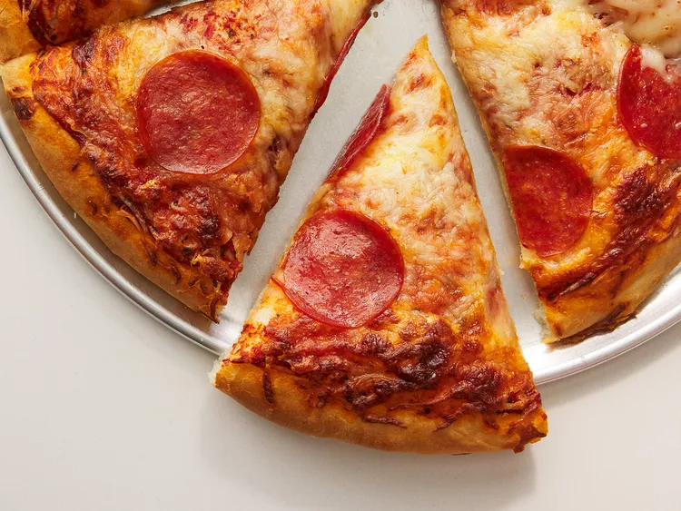

Experience the timeless allure of a Pepperoni Pizza, where the simple combination of flavors comes together to create an irresistible slice of culinary heaven. This classic pizza starts with a perfectly crisp and golden crust, which serves as the canvas for a symphony of flavors. Generously adorned with zesty tomato sauce, a blanket of melted mozzarella cheese, and an abundance of tantalizing pepperoni slices, each bite is a harmonious blend of savory, spicy, and cheesy goodness. The pepperoni, with its slightly crispy edges and savory umami, offers a satisfying contrast to the gooey, melted cheese, making every mouthful a delightful adventure for your taste buds. Whether you're enjoying it at a cozy family dinner or sharing with friends during a casual get-together, Pepperoni Pizza is the epitome of comfort food that brings joy to every occasion.
Crafting this Pepperoni Pizza at home is a breeze, and it allows you to customize it to your heart's content. Whether you prefer a thin and crispy crust or a thick and doughy one, you have the creative freedom to build the perfect pizza that suits your cravings. Simply layer on your favorite sauce, pile on as much cheese and pepperoni as you desire, and let the oven work its magic. When the pizza emerges with a mouthwatering aroma and a bubbling, golden top, you'll know it's time to savor a slice of this timeless classic. Pepperoni Pizza is more than just a meal; it's a slice of tradition and a source of pure, pizza-loving pleasure that never goes out of style.